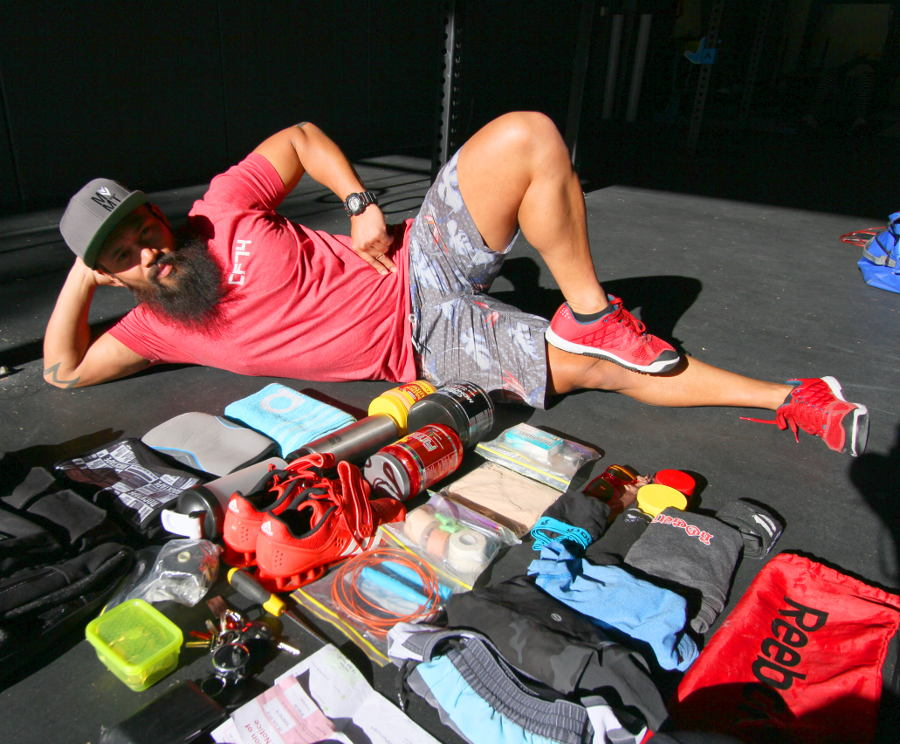

- screwdriver
- Stanley philips screwdriver for adjusting the speedrope and piercing fresh coconuts.
- keys
- Car keys, house keys and keys for the two gyms.
- tub
- Coins for coffee
- Voodoo floss
- Voodoo floss bands to show the girls how vascular my arms are when its applied.
- lifters
- Adidas Adipower Weightlifting shoes they are exuberant, comfortable, sexy because it's red, and keeps my feet stable for squat movements. It helped immensely to reach my 150kg back squat goal recently.
- shaker
- For mixing pre and post workout..minus the metal mixing ball because someone in the gym has pinched it.
- waterbottle
- Klean Kanteen 800ml, probably the most expensive water bottle at $30. Its BPA free, lifetime warranty, leak proof and no funny after taste like you get from plastic water bottles.
- Rocktape kneesleeves
- Rocktape 7mm, good for heavy squatting and keeping your patella intact
- Rehband kneesleeves
- Rehband 5mm, good for metcons
- Towel
- Pinched them from Bec, they're adidas and they smell nice
- BSN Amino X
- I mix it with creatine as a pre workout taste delicious
- Counter
- Ben gave me this while judging in the Open. Great thumb exercise.
- wallet
- Had this Country Road wallet for almost four years its coming apart and its still empty
- drugbag
- Tuna
- Backup snack
- Rice
- Backup snack
- Pants
- Backup undies a bargain from kmart five for $12
- crack cocaine powder
- Three servings of choclocate protein powder..be up shit creek if the bag breaks
- Goodie bag
- There's voltaren, three different types of tapes, hand grips, callus shaver, nail clippers and scissors
- Spealler speed rope
- Perfect handle size for my small hands and it's in blue
- shorts
- Given to me by one of the coaches they are super tight and very short
- Lululemon shorts
- Best training shorts from lululemon I have owned considering I have ripped four other shorts to date
- Cap
- My workout hat from AS Colour it smells so bad but I hate exposing my bald head
- Lululemon shirt
- Nice shirt to coach in from lululemon
- Oakley Holbrooks
- All the cool kids wear black Oakley Holbrooks so I have it in red
- Immodium
- Never leave home without these bad boys as it keeps my guts intact when I overdose on milk or dodgy meals. Highly recommend keeping a box in your bag.
- APS Creatine Monohydrate
- Used with Amino X for pre workout nothing flash, gets the job done
- Kraft Peanut Butter
- Frequently snack on when my blood pressure is low between sessions. If its good enough for Rich Froning then I'm sticking with it.
- socks
- Backup for when my feet gets moisty
- kttape
- Expensive tape of the lot but they do a great job and it comes in various colours
- pilltub
- Lucas papaw ointment for dry lips
- Rogue wrist wraps
- Rogue Fitness, bought them for extra support after I injured my wrist
- Rogue Spealler shirt
- I wore this shirt accompanied with his speed rope and hoped I instantly became ripped and strung shit loads of double unders..still working on it
- shoebag
- Use them as a wet bag for my stinky items
- Bill
- Final notice bills that I hid from Bec..oops
- Paperwork
- More late notice bills
- Topical Magnesium citrate
- Spray on affected body parts to treat cramps, muscle soreness, pms and stress..get on it
- Vaseline Essential Moisture
- Girls hate flakey and dry skin and so do I..smother this during the winter periods
- Oder eater spray
- Tinea is not cool and neither is wet and moisty feet..
- Fisiocreme
- I think they belong to someone else
- Perfume
- I have been called the nicest smelling man by my peers..thank you Armani Mania
- Garnier Mineral Mens Deodorant Extreme
- Cheap roll on from teks probably why it dries out after each use
- Datsusara Gear Bag Pro
- It's definitely the most expensive gym bag purchased but has so many features eg: made from hemp so its anti micobial, breathable, water resistant, lots of pockets big and small, can fit up to four bottles. Amazingly I manged to fit all this junk inside.
- What are you wearing right now?
- Billabong kahuna shorts,
Crossfit lifeguard shirt,
Mvmt hat,
G-Shock watch,
Kmart underwear,
Nano 2.0 and
Nike no show socks.
- How long have you been doing crossfit?
- Just under 18 months
- What gym do you go to?
- Crossfit Creature and Crossfit Scorch
- What's next on your kit shopping list?
- I will have a pair of Nano 4.0 in white...Boom!!!
- What do you do as a job?
- Personal Training and Coffee Cupping
- Competition history
- 2013 Regionals Team Division
- What isn't in your bag that should be?
- Thick arse camping gloves for coaching early in the morning..no joke it's cold
- What bit of kit would you use, even if you were sponsored by their competitor?
- Adidas Adipower Weightlifting shoes they are exuberant, comfortable, sexy because it's red, and keeps my feet stable for squat movements. It helped immensely to reach my 150kg back squat goal recently.
